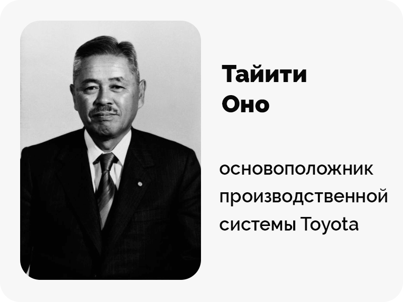
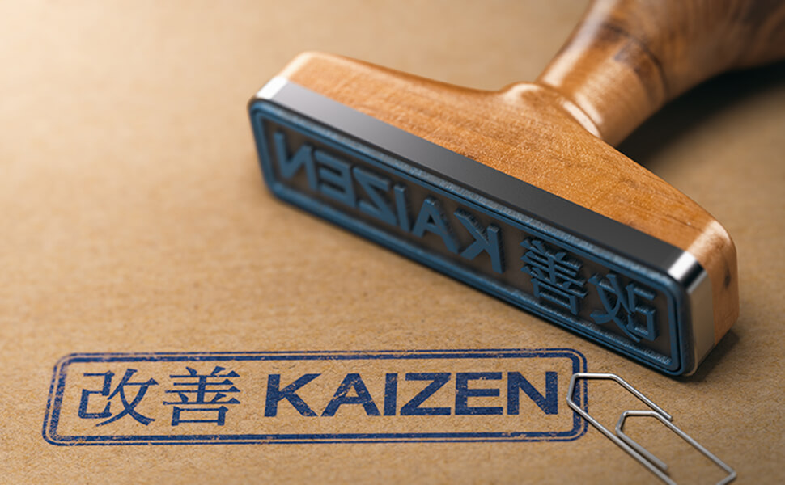

Под бережливым производством понимают методы ведения хозяйственной деятельности, направленные на оптимизацию всех процессов, уменьшение затрат и объемов отходов, поддержку инноваций и сокращение времени создания конечного продукта. Эта система, иначе называемая Lean manufacturing, позволяет буквально каждому сотруднику видеть и выявлять потери, действовать так, чтобы ценность выпускаемого продукта неизменно росла. По сути, если коротко отвечать на вопрос о том, что такое бережливое производство простыми словами, можно сказать, что это максимально возможное сокращение расходов и одновременное повышение потребительской ценности.

Что такое бережливое производство
Бережливое производство — это определенная концепция управления. Ее основа — постоянный поиск возможностей устранить потери на производстве и в офисе. Часто для обозначения концепции используются термины «lean-производство» и «lean-технологии». Lean в данном случае означает именно «производство без излишеств» — то, чего должно добиваться любое предприятие.
Начальный пункт концепции: компания определяет, какова ценность продукта для конечного потребителя на каждом этапе производства. Цель — обеспечить безостановочное устранение потерь. Потеря в данном случае — действия или операции, которые расходуют ресурсы, но не создают ценности для потребителя.
Выделяют потери первого и второго рода. Первые — действия, которые не создают ценности, но и устранять их нельзя. Например, предприятие не может обойтись без транспортировки или оформления всех необходимых документов. При этом ценности для конечного потребителя эти операции не создают.
Потери второго рода также не создают ценность. При этом их можно полностью исключить из процесса производства, и к этому необходимо стремиться. Лишнее ожидание, бракованная продукция — примеры потерь второго рода.
Всю деятельность предприятия и все процессы, происходящие на производстве, можно разделить на операции и процессы. Среди них есть две категории:
- добавляющие продукту ценность;
- не добавляющие продукту ценности.
История изобретения бережливого производства
Первым, кто поставил производство и сборку автомобилей на поток, а также внедрил первые техники бережливого производства, стал Генри Форд. Он стал практически создателем системы и добился результатов. На его заводах время выпуска одной машины стало исчисляться буквально в минутах, а не в часах и днях. Конечно, при массовом, серийном создании продукции используются идентичные и взаимозаменяемые компоненты, методы организации деятельности, что исключено в случае с ручной либо ремесленной работой. Подобный подход поднял производственные показатели буквально до небес. С 1908 по 1927 годы Ford Motor Company выпустила свыше 15 миллионов авто.
В Японии в 1926 году Сакити Тойода открыл завод Toyoda, делающий автоматические ткацкие станки. А через несколько лет тут стали выпускать автомобили и переименовали компанию в Toyota.
В 1950 году Эйдзи Тойода, племянник Сакити, посещал завод Rouge Ford в Дирборне, штат Мичиган. В то время филиал в Дирборне был самым комплексным и крупнейшим производственным предприятием Ford. Он производил почти 8000 автомобилей в день, тогда как Toyota производила только 2500 автомобилей в год.
Изучив процессы производства, Эйдзи Тойода понял, что система, придуманная Генри Фордом, не подходит его компании. Японский рынок был слишком маленьким и требовательным для массового производства. Желания заказчиков постоянно менялись и варьировались от компактных и доступных машин до самых роскошных автомобилей.
Система массового производства Ford Motor Company была сосредоточена на объемах производства, а не на желании потребителя. Тут команда Toyota столкнулась с проблемой компромисса между производительностью и голосом покупателей.

В сотрудничестве с Тайити Оно компания разработала новую систему производства автомобилей. Эксперименты Тайити привели к разработке нескольких новых идей, которые стали известны как «Производственная система Toyota» или Toyota Production System. Система произвела революцию в производстве физических товаров и легла в основу концепции бережливого производства.
В России систему бережливого производства начали внедрять только в 2004 году, она быстро заняла свое место в экономике, оказывая влияние на маркетинг.
Концепция бережливого производства
В рамках производственной системы компании Toyota, где впервые стали применять систему бережливого производства, делают акцент на трех основных факторах, приводящих к убыткам:
- Mura (неравномерность). Mura — любая нестабильность в производственном процессе. Это может быть несвоевременная поставка комплектующих, не собранные вовремя данные, нужные для работы, невозможность обеспечить нужное количество работников или оборудования и пр. Все, что придется решать в будущем и может привнести настоящий хаос в работу.
- Muri (перегрузка). Это перегрузка оборудования или операторов, по сравнению с расчетной нагрузкой. Потери и перегрузка возникают из-за неравномерности — если нам не удается выровнять загрузку персонала и производственных мощностей, то в какое-то время они будут простаивать, а в другое будут перегружены работой.
- Muda (потери, иными словами, — деятельность, не создающая ценности). Муда, что по-японски означает «потери», это любая деятельность, которая потребляет ресурсы, но не создает ценности для клиента.
{kind=link}
Японцы вдохновили создателей крупных компаний учиться у них, что привело нас к концепции бережливого производства.
Как избавляться от муда, мура и мури:
- Во-первых, нужно стабилизировать процесс, чтобы исключить неравномерность (мура) и перегрузки (мури).
- Далее надо стандартизировать правила работы.
- После этого мы можем устранить потери, вызванные прежней неравномерностью.
Ключевым принципом внедрения бережливого производства является устранение потерь при постоянном улучшении процесса.
К видам потерь относятся процессы, виды деятельности, продукты или услуги, требующие времени, денег или навыков, но не создающие ценности для потребителя. Как пример: избыточные запасы, неэффективные или расточительные процессы и процедуры.
Устранение любой неэффективности должно упростить обслуживание, снизить затраты и, в конечном итоге, обеспечить экономию на конкретном продукте или услуге по цепочке поставок потребителю.
Философия бережливого производства в целом сводится к следующему:
- Всегда можно найти способ оптимизировать любой процесс.
- Главное – это ценность продукта.
- Скорость и эффективность процессов нужно постоянно стараться повышать.
- Первая задача оптимизации – уменьшение потерь.
К этому, собственно, и сводятся характерные особенности бережливого производства или Lean manufacturing.
Основные принципы бережливого производства
Несмотря на то, что практическое обеспечение принципов бережливого производства требует от предприятия достаточно серьезных усилий, сами они довольно просты. Всего их пять, и сформулировать их можно так:
{kind=link}
- Определить, что формирует ценность продукта с позиции потребителя. На предприятии могут выполняться самые разные действия, и далеко не все из них имеют для потребителя значение. Лишь тогда, когда компания точно знает, что именно нужно конечному потребителю, она в состоянии установить, какие из процессов позволяют предоставить ему его ценности, а какие – нет.
- Определить, какие действия обязательно нужны производственной цепи, а затем устранить потери. Чтобы оптимизировать работу и выявить потери, требуется в деталях описать каждое действие с момента получения заказа до момента поставки продукта потребителю. Благодаря этому можно установить, с помощью чего можно улучшить производственные процессы.
- Перестроить действия в производственной цепи так, чтобы они превратились в целостный поток работ. Процесс производства должен быть выстроен так, чтобы исключались любые потери (простои, ожидания и т.д.) между операциями. Она делится на:
- Техническая и структурная реорганизация
- Организационная структура
- Планирование и финансы
- Действовать, исходя из интересов потребителя. Желательно, чтобы предприятие выпускало лишь тот продукт и в таком объеме, который необходим конечному потребителю. Это позволяет избежать лишних действий, ненужных потерь и затрат.
- Стремиться совершенствоваться, постоянно сокращая ненужные действия. Применять и реализовывать систему бережливого производства необходимо не единожды. Максимальный эффект будет только в том случае, если поиск потерь и их устранение будут проводиться регулярно и систематически. Делится на две категории:
- Кайкаку — радикальные улучшения потока создания ценности
- Кайдзен — процесс непрерывных улучшений, который начинается после первичной отладки системы.
Не важно, насколько хорошо идут дела, всегда можно сделать лучшие и получить больше. Поэтому команда должна постоянно анализировать, оценивать и улучшать процесс и результат своей работы, создавать инструкции контроля работников и их мотивации.
Цели бережливого производства
Как свести потери к минимуму или устранить их совсем? Есть необходимость стремиться к целям, которые лежат в основе понятия бережливого производства:
{kind=link}
- Производить ровно столько продукции, сколько нужно потребителям.
- Достичь идеального качества продуктов/услуг при нулевом проценте производственного брака.
- Гарантировать заказчику быструю и безопасную доставку продукции.
- Сократить площадь складских помещений, места до необходимого минимума.
- Использовать материальные, временные и трудовые ресурсы максимально эффективно при помощи современных технологий.
- Вовлечь каждого сотрудника предприятия в процесс создания ценного продукта, раскрыть творческий потенциал работников.
Главная цель бережливого производства — избавиться от потерь — действий, которые не создают ценность. Во всем мире потери стали называть японским словом муда (muda), которое означает любую деятельность, потребляющую ресурсы, но не создающую ценности.
Преимущества и недостатки бережливого производства
Каждая система имеет свои плюсы и минусы, ниже собрали основные из них.
|
Сначала разберем плюсы |
Минусы в концепции, как и в любой другой системе управления, тоже есть |
|
|
Недостатки связаны в основном с неграмотной организацией работы, с чем компания может столкнуться в начале своих изменений.
8 видов потерь в бережливом производстве
В противовес ценностям, за которые клиент готов платить, в бережливом производстве есть и потери. Это все, что уменьшает ценность продукта или обходится компании без выгоды.
{kind=link}
Тайити Оно выделил 7 видов потерь в бережливом производстве:
- Перепроизводство. Минимизация количества непроданной продукции снизит затраты на их хранение. Оно считал перепроизводство главным видом потерь, из-за которого возникают остальные проблемы.
- Ожидания. Другими словами, это сокращение простоя операторов во время работы техники, а также избавление от разнообразных задержек и поломок оборудования. Все это тратит время на производство продукта и не добавляет ценности продукту.
- Лишние запасы. Простаивающее место и склады запасов сырья, деталей или готовой продукции, а также незавершенное производство — это замороженные денежные средства, которые не идут на развитие бизнеса.
- Транспортировка. Не стоит забывать об оптимизации транспортировки деталей и готового продукта. Каждое перемещение увеличивает риски задержек или повреждений, а также повышает общие расходы на транспортировку.
- Лишние движения людей. Лишние перемещения работников тратят в сумме немало времени. Это наверняка может привести привести к повышению стоимости продукта без увеличения его ценности.
- Брак. Сокращение вероятности дефектов на производстве помогает сохранить финансы, а также временные и рабочие ресурсы.
- Ненужная обработка. Излишняя или неправильная обработка комплектующих, а иногда и целые лишние этапы обработки также приводят к временным и финансовым потерям.
Изначально было выделено 7 видов потерь, но в конце 20-го века Джеффри Лайкер, автор книги о производственной системе Toyota, добавил восьмой вид.
- Нереализованный потенциал сотрудников. Потери в виде неиспользованного потенциала сотрудников, упущение новых и свежих идей негативно сказываются на ценности производимого продукта.
Именно поэтому одной из ключевых ценностей Lean являются работники, их умения и способность анализировать ситуацию.
Инструменты бережливого производства
Бережливое производство включает в себя набор инструментов, которые способствуют выявлению и устранению потерь компании, возникновения проблем. Потери могут возникнуть из-за неравномерной рабочей загрузки, переработок или ошибок в распределении финансов.
Ниже приведены все самые распространенных инструменты, используемые в бережливом производстве.
{kind=link}
- Кайдзен (Kaizen, яп. непрерывное улучшение). В основе — объединение усилий всех сотрудников, их непосредственное участие в достижении общей цели компании и создание особой корпоративной культуры. Еще ее называют системой подачи и рассмотрения предложений.
- Хейдзунка (Heijunka, яп. выравнивание). Организация «сглаживания» производственного плана, при котором заказы выполняются циклами, а дневные колебания уровня заказов приводятся к их значению в долгосрочной перспективе. Бережливое производство ориентируется на создание избытка производственных мощностей во времени из-за высвобождения ресурсов и уменьшения времени переналадки. При этом возникающие несоответствия между хейдзунка и реальным спросом минимизируются, чему весьма способствует процесс «сглаживания сбыта» (level selling).
- VSM (Value stream mapping, с англ. карта потока создания ценностей, картирование). Этот инструмент визуализирует процесс реализации продукта от поставки сырья до покупки потребителями. Он помогает планировать и внедрять нововведения, тем самым постоянно улучшая качество продукта. Картирование потока создания ценности включает следующие этапы:
- Документирование карты текущего состояния, нужно для проверки различных методов.
- Анализ потока производства или его небольшие части.
- Создание карты модели будущего состояния.
- Разработка плана по улучшению, используя рабочие методы и инструменты.
- Poka Yoke (с англ. защита от ошибки). Главная цель инструмента — максимальное устранение дефектов при производстве продукта. Помогают избежать ошибок в процессе производства, либо вовремя выявить их, чтобы они не поступили в следующий процесс в виде дефектов и негативных результатов.
- Kanban-доска (Канбан, яп. “рекламный щит, вывеска”). Инструмент бережливого производства, который снижает складские запасы продукции. Позволяет равномерно распределять и планировать рабочую загрузку, а также регулировать потоки выпущенной продукции, устраняя проблемы, экономя место. На предприятии канбан может выполнять две задачи:
- Для процесса производства – это так называемый канбан изготовления: по нему видно, что нужно приступать к созданию продукции (либо следующему его этапу).
- Для сотрудников – это канбан отбора (или перемещения), на нем информация о том, что данное изделие (заготовку) нужно переместить.
- TPM (Total Productive Maintenance, с англ. всеобщий уход за оборудованием). Задачей TPM является продление срока эксплуатации оборудования за счет привлечения к обслуживанию оборудования каждого сотрудника компании, а не только узких специалистов. Цель метода — минимизировать поломки, брак, задержки и несчастные случаи на производстве.
- Jidoka (Дзидока, с яп. Автономизация). Дзидока инструмент, который предотвращает производство дефектной продукции. При использовании этого принципа работы оборудование автоматически обнаруживает некоторые проблемы, например, неисправность или брак продукции, и сигнализирует об этом, тем самым исключая перепроизводство и массовые потери продукта, позволит сохранить силы и время.
- Полная визуализация (от лат. visualis, «зрительный»). Подразумевает размещение на виду абсолютно всего, что касается производственного процесса: инструментов, деталей, операций, продукции, данных о результатах работы. Благодаря этому все участники знают, что происходит в системе и в каком она находится состоянии.
- Принцип вытягивающего производства (англ. pull production). Это когда от последующих операций к предыдущим идут сигналы о тех или иных производственных потребностях. Проще говоря, суть любой (даже малейшей) деятельности при использовании этого принципа сводится к тому, что:
- Реализуются лишь заказы, поступившие именно от следующей операции.
- Если для осуществления следующей операции производить ничего не нужно, значит, работа на время останавливается.
Получается, каждый станок производит лишь необходимый для следующей операции продукт, именно благодаря этому происходит рост объемов прибыли.
- Стандартизированные работы (стандартная работа, standard work). Являются четким и максимально визуализированным алгоритмом выполнения каких-либо конкретных работ. Этот алгоритм включает в себя разные стандарты, например, стандарты продолжительности производственного цикла, стандарты последовательности действий в течение одного цикла, стандарты количества материалов для работы и т.д.
- Инструмент SMED (Single Minute Exchange of Die, с англ. Быстрая переналадка). Это особая технология быстрой переналадки оборудования. Применяют, как правило, две категории операций. Первая – это внешние операции, и они могут проводиться без остановки оборудования (сюда относится подготовка материалов и инструментов и т.п.). Вторая – это операции внутренние, и для их осуществления оборудование необходимо останавливать. Смысл SMED состоит в том, что максимальное количество внутренних операций переводится во внешние. Достигается это при помощи организационных и технологических инноваций.
- Схема «Дом TPS» (Toyota Production System, англ. Производственная система Тойота).Схема была разработана специально для того, чтобы упростить объяснение сути производственной системы Тойоты служащим и поставщикам. По словам разработчиков, форма дома (крыша, колонны и основание) была использована преднамеренно, потому что она понятна каждому и символизирует стабильность и основательность. Фундамент «здания TPS» — 3 принципа: Хейдзунка (heijunka), Кайдзен (Kaizen) и стандартная работа (Standard work).
- Система JIT (Just-In-Time, с англ. точно вовремя). Система управления материалами в производстве, при которой компоненты с предыдущей операции (или от внешнего поставщика) доставляются именно в тот момент, когда они требуются, но не раньше. Данная система ведет к резкому сокращению объема незавершенного производства, материалов и готовой продукции на складах, экономя место.
- U-образная ячейка. Способ организации рабочего пространства при обработке изделий, позволяющий минимизировать перемещения сотрудников и обрабатываемых деталей. При таком способе станки и оборудование располагается в форме латинской буквы "U" с соблюдением последовательности операций.
5S и 6S
Отдельно следует рассмотреть методику 5S (5 Steps, с англ. 5 шагов). Это ежедневная практика, которая помогает выявлять проблемы в производстве, которые были вызваны неправильной организацией рабочего места. Название инструмента бережливого производства возникло от сокращения пяти японских слов: Seiri, Seiton, Seiso, Seiketsu и Shitsuke. Их адаптация в русском языке выглядит следующим образом: сортировка, соблюдение порядка, содержание в чистоте, стандартизация и совершенствование. 5S — пять шагов эффективной организации рабочего пространства и стандартизации действий персонала, основанная на визуальном контроле. Методика 6S (6 Steps, с англ. 6 шагов) — это усовершенствованная 5С. В известную методику 5S добавили еще один шаг — пункт 4 «соблюдать динамический порядок». Шаги методики 6S.
|
№ |
Японский термин |
Русский термин |
Английский термин |
Перевод английского термина |
Содержание деятельности |
|
1 |
Сейри |
Сортировать (организация) |
Sort |
Разбирать, классифицировать |
Удаление ненужного |
|
2 |
Сейтон |
Систематизировать (порядок) |
Set in Order (Straighten) |
Приводить в порядок |
Упорядочение размещения предметов |
|
3 |
Сейсо |
Санировать (чистоплотность) |
Shine (Sweep) |
Чистить (подметать) |
Очистка рабочего места, устранение источников загрязнения |
|
4 |
- |
Сохранять динамический порядок |
Save |
Сохранять |
Непрерывное поддержание порядка во время работы |
|
5 |
Сейкетсу |
Стандартизировать (опрятность) |
Standardize |
Стандартизировать, нормировать |
Стандартизация правил уборки, упорядочения, очистки |
|
6 |
Ситсуке |
Самодисциплина |
Sustain (Self Discipline) |
Поддерживать (самодисциплина) |
Формирование привычки соблюдать чистоту и порядок |
Приложения и сервисы для Lean-менеджмента
- LeanKit – программа, ориентированная именно на выполнение задач по Lean-менеджменту для пользователей сайта на основе метода канбан. Функционал инструмента очень продуманный, сроки выполнения отображаются наглядно, плюс удобно контролировать выполнение обязанностей другими сотрудниками.
- Kanbanize – еще один очень простой и эффективный инструмент, базирующийся на методе канбан. Включает инструменты аналитики и возможность расширения параметров досок на свое усмотрение. Введите данные
- Worksection – украинский продукт, базируется на том же методе канбан и диаграммах Ганта. Инструмент предлагает все рабочие технологии для удобного управления проектами и составления нескольких видов отчетов. Можно использовать для управления, устранения проблем.
- Jira – хороший, наглядный инструмент, опять-таки на технологии канбан. Есть возможность расставлять приоритет, привязывать задачу к конкретной категории и отслеживать завершение обязанностей на разных версиях проекта в одном месте.
- Trello – самый популярный рабочий инструмент для управления задачами, есть возможность написать этапы работы, очень простой и в то же время эффективный. Можно работать с командой и присваивать каждому задачи, которые он должен выполнить, создавая карточки. Этот инструмент поможет легко наладить рабочие процессы, можно выставить права редактирования и прописать кто несет ответственность за каждый этап. Кстати, у Jira и Trello один разработчик.
Правила успешного построения бережливого производства
Для реализации методологии бережливого производства нужно сначала подготовить условия:
- Проведите обучение для персонала, правильно распределите человеческие ресурсы.
- Сформируйте корпоративную культуру, направленную на продвижение новых методов работы и объяснение их ценности.
- Сразу подайте идею бережливого производства так, чтобы все сотрудники были ею заинтересованы.
- Меняйте мышление людей, учите правильно понимать потери и ценности.
- Согласуйте работу всех отделов (маркетингового, финансового, IP, HR и др.), добейтесь взаимной поддержки.
- Организуйте централизованное управление, обеспечьте финансовую поддержку внедряемой концепции.
После этого можно начинать пошагово организовывать в компании бережливое производство. Выделяют следующие этапы внедрения бережливого производства:
{kind=link}
- Разделить производство на ячейки по семействам продуктов и организовать команды для работы над каждым семейством. Разработать ряд целевых показателей, на достижение которых будет ориентироваться производство (сократить количество запасов, сократить производственный цикл и т. д.)
- Определение потребительской ценности товара или услуги. То есть в первую очередь нужно выявить действия, приносящие полезность потребителю, и действия, в которых нуждается лишь сам производитель.
- Выявление списка оптимального числа операций, необходимых для создания ценного продукта. Налаживание производственной цепочки от начала планирования и до поставки готового изделия, одновременное сведение возможных потерь к минимуму.
- Организация непрерывной цепочки действий, направленных на выпуск ценного продукта, глобальный пересмотр всего процесса его создания. Работа сотрудников выстраивается по принципам lean-концепции. Лишние операции убирают, оставляя лишь те, что придают ценность выпускаемому продукту. Простои и ожидания сводятся к минимуму (тоже за счет тщательного упорядочения всех действий). Если не хватает производственных мощностей и технологий – их внедряют, и т. д. и т. п.
- Продукт подвергается так называемому «вытягиванию» со стороны потребителя. Суть термина в том, что компания стремится выпустить именно нужный покупателям продукт и лишь в требуемом количестве.
- Создать отдельное подразделение, которое будет собирать воедино и анализировать опыт рабочих групп, чтобы выделять из него самые действенные практики и обучать им остальные рабочие группы;
- Все процессы на предприятии непрерывно совершенствуются, улучшение дизайна и продукта. Применение бережливого производства – это не разовая акция, а изменения, внесенные в работу навсегда, на постоянной основе. При этом к поиску улучшений и возможностей для сокращения потерь привлекаются абсолютно все сотрудники.
Разберем пошагово основные условия и советы по построению бережливого предприятия. Необходимо несколько условий для эффективной модернизации:
- Необходим «агент перемен» — человек, обладающий достаточными полномочиями и готовый к конфликтам и борьбе за внедрение новых принципов в работу.
- У компании должны быть основы знания о бережливом производстве (не только у агента перемен).
- Бизнес организации должен быть в кризисе — только компания, в которой все очевидно плохо, может быть готова к кардинальным переменам.
Примеры внедрения бережливого производства
Если говорить о российских предприятиях, то первопроходцами тут стали представители крупномасштабного промышленного производства. Это КамАЗ, «Группа ГАЗ», «ВСМПО-АВИСМА», «Русал», «ЕвразХолдинг», «Еврохим» и другие.

Обычно за консультациями обращаются предприятия, на которых появились серьезные проблемы. То есть снижается рентабельность, выходит больше брака, заказчики недовольны и т. д. Компаниям приходится думать, как улучшить производство и снова войти в колею.
Рассмотрим популярные примеры подробнее.
«Урал» (Миасс)
Российский автозавод «Урал» (Миасс) начал внедрять систему бережливого производства в 2004 году после кризиса и существенного падения продаж. О внедрении новой концепции были оповещены все сотрудники – от уборщика до топ-менеджмента. В качестве пилотных проектов создали эталонные участки сборки автомобилей и отдельных узлов.
В результате удалось вдвое повысить производительность труда, снизить затраты втрое, а остатки незавершенного производства вчетверо. Экономия средств составила 300-400 млн рублей в год.
«КамАЗ»
Ещё один удачный пример организации бережливого производства высокой эффективности. Здесь процесс начался в 2005 году, а еще раньше к преобразованиям приступили члены концерна «КамАЗ-Металлургия» и «КамАЗ-Дизель». И сегодня в разных подразделениях и компаниях группы работы в данном направлении не прекращаются.
Специально подготовленные менеджеры, защитившие по теме усовершенствования технологических циклов более 50 проектов, теперь сами обучают других сотрудников и подключают к процессу, причем не безрезультатно, контролируя каждый этап. Директор КамАЗа дал распоряжение оптимизировать расходы на содержание относящейся к предприятию земли, а это в целом 1 900 га. Незадействованные в производстве площади планируется освободить и продать либо сдать в аренду (чтобы получать от них прибыль). Была выбрана грамотная ориентация и цели, на это ушел не один месяц.
ЭПО «Сигнал»
Пример из Саратовской области. Бывшее оборонное предприятие, делает приборы для аэрокосмической промышленности и аппаратуру, используемую в газовом хозяйстве. Главная проблема на подобных заводах – износ оборудования. Тут задача внедрения лин-технологий была передана на аутсорс. Специалистам хватило буквально нескольких дней, а не года, чтобы помочь сотрудникам выявить все технические неисправности и подготовить программу по их устранению.
Тут суть сводится к следующему: поддержание работоспособности оборудования – это задача не только ремонтников, но и операторов, работающих на конкретных станках и знающих на них каждую «трещину». Стратегия была определена на года.
«Porsche»
В 1991 году, когда компания понесла убытки в 40 млн. долларов и стало ясно, что она находится в серьезном кризисе. Венделин Видекинг был назначен ответственным за выход из кризиса, стал агентом перемен в переходе на бережливое производство. Видекинг принял дальновидное решение — изучать и перенимать опыт японских производителей, которые на тот момент уже захватили средний ценовой сегмент рынка Европы. В результате Видекинг сократил число уровней управления с шести до четырёх, была создана «доска позора», игравшая роль визуального контроля качества. При этом поощрялось выявление брака на ранних стадиях, где его стоимость минимальна. Была организована система подачи предложений, удачные идеи поощрялись. На производстве была внедрена собственная система контроля качества. Одновременно с осуществлением этих шагов были воплощены рекомендации по кайкаку специалистов Института Кайдзен, направленные на уменьшение запасов вещей и организацию плавного движения деталей от обработки сырья до сборки автомобиля. Помимо избавления от муда на своих собственных производствах, Porsche занялась работой с поставщиками деталей, продвигая принципы бережливого производства и поставки деталей по принципу «точно вовремя» (just in time), уменьшая места для хранения и к 1995 году, за два года, работа 30 из 60 заводов-поставщиков Порше претерпела существенные изменения. От глобального кризиса до рассвета прошло всего 4 года.
Применение бережливого подхода
Несмотря на происхождение «из цехов автомобильных концернов», концепция бережливого производства применима и для услуг, в том числе государственных и муниципальных.
Предположим, компания заказывает подготовку стратегии. Процесс с позиции ценности для компании выглядит следующим образом:
|
Процесс, создающий ценность |
Процесс, не создающий ценность |
Длительность процесса |
|
Установочная встреча с представителями консалтинговой компании |
2 часа |
|
|
Расчет затрат и подготовка ценового предложения |
2 дня |
|
|
Согласование цены |
2 часа |
|
|
Подготовка договоров |
2 дня |
|
|
Подписание договора |
1 час |
|
|
Внутренние мероприятия консалтинговой компании, связанные с формированием команды специалистов |
1 день |
|
|
Ожидание ключевых сотрудников команды из отпусков, командировок, с других проектов |
10 дней |
|
|
Знакомство консультантов с ключевыми сотрудниками компании для организации работы |
1 час |
|
|
Сбор данных |
20 |
|
|
Работа по анализу и разработке стратегии |
20 дней |
|
|
Стратегические сессии с ключевыми сотрудниками компании |
10 дней |
|
|
Опоздания, больничные, замены сотрудников и прочие непроизводительные затраты времени консультантами* |
12 дней |
Области применения бережливого производства
Сферы применения принципов бережливого производства очень разнообразны хотя на первый взгляд и кажется, что это подходит лишь для производственных предприятий. Разноплановости есть масса подтверждений среди российских и зарубежных компаний. Некоторые рассчитаны на года, другие могут работать только в краткосрок.
Концепция «Бережливый офис»
«Бережливый офис», подразумевает пересмотр и обновление его ресурсов, улучшение системы действий, устранение мусора, места.
Порядок действий при этом следующий:
- Приведите в порядок рабочее место.
- Сведите к минимуму запасы. Пусть на столе лежит лишь самое нужное.
- Устраняйте потери.
- Время ожидания тоже следует минимизировать. Пока менеджер ждет прихода клиента или звонка от него, он теряет время (а мог бы сделать что-то полезное).
- Приучите себя к внимательности и сразу всё делайте правильно, чтобы потом не тратить время на выискивание и исправление банальных опечаток и т. п.
- Сформируйте поток деятельности, точно распределите круг задач каждого сотрудника.
- Не прекращайте совершенствовать бизнес. Изучайте рабочие процессы и все время старайтесь их улучшать.
В качестве одного из инструментов бережливого офиса используется визуализация (lean-visualization). В сравнении с текстами, информация, представленная в виде схем и графиков, запоминается лучше. Можно задействовать доску Канбан. Сделайте в приложении (Jira, Trello, Asana, Bitrix24) или просто начертите на ватмане цели, планы, качества и так далее. Пробуйте применять разные инструменты бережливого офиса, подбирайте то, что лучше всего подходит именно вам, и вы увидите, как это отразится на результатах работы.
Концепция «Бережливый стартап» и Lean при разработке ПО
Главная суть Lean Startup — в итеративном подходе к выпуску продукта, который необходимо постоянно тестировать, получать обратную связь от покупателей и вносить соответствующие корректировки. При этом не нужно ничего детально планировать и вкладывать в проект серьезные средства. Так становится ясно, что ценит клиент в продукте и задействовать лишь столько денег, сколько требуется для его выпуска. Причем бережливость затрагивает и потраченное время, и человеческие ресурсы (не только деньги), и расходы места. Lean Startup с помощью постоянного тестирования помогает довести до ума даже минимально жизнеспособный продукт (MVP), который будет работать. При этом задействуется Customer Development, Lean Canvas (пресловутые «Девять шагов построения бизнеса») и agile (ответ на клиентскую обратную связь и comment). Эта же суть распространяется на разработку программного обеспечения.
Lean-разработчики и владельцы Lean Startup не используют все 14 принципов системы Toyota, но ориентируются на основные ценности бережливого мышления.
10 основных принципов концепции «Бережливый стартап» и Lean при разработке ПО:
{kind=link}
- Ликвидировать потери. Если действие не улучшает качество продукта, не приносит прибыли заказчику и не экономит время разработчика, то его нужно исключить, сократить места хранения.
- Усиливать обучение, повышение квалификации.
- Принимать важные решения в последний момент.
- Объединять сотрудников, работать сообща.
- Создавать целостный продукт.
- Следить за общим процессом и предоставить информацию по проекту, чтобы с ней можно было ознакомиться в любое время.
- Менеджмент задействуется именно такой, который подходит для рискованных условий.
- Стартап и бизнес должен непрерывно развиваться, изучать потребности своей целевой аудитории, обязательно проверять и подтверждать на практике правильность выдвигаемых гипотез.
- Что особенно важно в Lean Startup, это как можно раньше узнать реакцию потребителя на MVP, выявить его недостатки и продолжить развитие, либо сделать пивот и двигаться совершенно в ином направлении.
- Анализ инноваций, которые нужно тщательно изучать по всем показателям, чтобы понимать, насколько эффективен стартап.
В сфере продажи товаров и услуг
В системе бережливого производства есть инструменты, позаимствованные из ритейла. Это: FIFO, размещение товаров в торговых залах, JIT, канбан, автономизация. Есть 6 основных особенностей в этом направлении, которые подробно разберем в статье ниже.
- Признаки схожести экономических субъектов в розничной торговле:
- Производственные процессы автоматизированы или механизированы.
- Система менеджмента.
- Создание ценности для клиента и постоянное её усовершенствование. На рынок необходимо выдать новый, уникальный продукт, либо непрерывно работать над улучшением того, что уже есть.
- Способность конкурировать.
- Основные отраслевые отличия Lean retailing. Целевая потребность клиента при походе в магазин – приобрести товар в соответствии с ожиданиями. Кажется, оценить удовлетворенность клиента просто – достаточно выяснить, купил он желаемое или нет. Однако очевидно, что на поведение потребителя влияют сопутствующие факторы:
- как долго человек ищет товар и потом стоит в очереди на кассе;
- чувствует ли себя при этом комфортно (психологически и физически);
- соответствуют ли цены ожиданиям; и многое другое.
Что касается сферы В2В, то здесь большинству производителей не удается добиться гармоничного взаимодействия между элементами системы. В особенности если речь идет о нефти, алюминии, зерне, то есть о биржевых товарах.
- Обратная связь от клиента. В сфере В2В производитель и конечный потребитель никогда не пересекаются. В ритейле же покупатель сам приходит в торговый зал и чаще всего не против общения.
С клиентом необходимо налаживать партнерские отношения, стараться завоевать лояльность. Нужно постоянно «держать руку на пульсе» потребителя, следить, насколько он доволен, и подталкивать к обратной связи.
- Сотрудники — главная составляющая в создании ценности. Нельзя ограничивать действия продавца строгим сценарием, это может не лучшим образом сказываться на эффективности взаимодействия с клиентом. Задача руководителя в бережливом ритейл-бизнесе – не просто контролировать, а всячески поддерживать коллектив, четко обозначать цели и создавать благоприятную эмоциональную атмосферу. Важно донести до каждого сотрудника, что и зачем делается в бизнесе.
- Значение логистики и стандартизации. К организации управления товародвижением необходимо подходить комплексно, с использованием специальных информационно-программных продуктов. Таких, например, как Stock-M (здесь применяется теория ограничений систем, то есть логика ТОС). С их помощью удается оптимизировать транспортные и иные материальные потоки.
- «Встречный» материальный поток. Процесс создания ценностей принято представлять в виде двух потоков, материального и информационного. В сфере ритейла выделяют еще и второй (встречный) материальный поток, рассматриваемый как дополнительный. К нему относят: непродовольственные товары, которые не удалось продать в ходе сезонных уценок; просроченные продовольственные товары; оборотную тару; поток вторсырья. Встречный поток появляется по следующим причинам:
- Короткие сроки годности (к примеру, это касается кисломолочных продуктов).
- Трудности с прогнозированием покупательского спроса в конкретных торговых объектах.
- Неверно выстроенная в торговой сети политика закупок и безответственное отношение к данному вопросу.
Нужно сводить встречный поток к минимуму. Например, Сеть 7 Eleven в день истечения срока годности товары уцениваются вдвое и отлично продаются. Есть компании, которые утром того дня, когда заканчивается срок годности, направляют продуктовые товары в социальные службы, занимающиеся организацией питания для малоимущих. Это придает встречному потоку особый смысл и ценность. Например, X5 Retail Group уже заявила, что возврат поставщикам хлебобулочных изделий осуществлять не будет, и к молочным товарам планирует применять эту же практику.
За счет принципов бережливого производства в ритейле вполне можно добиться повышения значимых показателей, следует лишь принимать в расчет определенные особенности данной сферы.
Бережливое производство и персонал
Чтобы технологии бережливого производства действительно успешно работали, необходимо проводить целенаправленное обучение персонала. Для этого существуют специальные проекты и программы, рассчитанные и на новичков, и вообще на сотрудников разных категорий. В учебный план входит изучение основных видов бережливого производства, используемого инструментария и критериев оценок результатов.
По окончании занятий структура предприятия переформировывается. Из его подразделений образуются новые функциональные единицы с учетом требуемых потоков создания ценностей (товаров или услуг). В рамках концепции бережливого производства образуются рабочие группы (бригады), наделяемые ответственностью за внесение постоянных улучшений в процесс трудовой деятельности и со своими полномочиями, которые позволяют не согласовывать с вышестоящим руководством каждый шаг.
Бывает и такое, что младший персонал сопротивляется внедрению Lean. Это случается, когда принципы бережливого производства не донесены в полной мере до сотрудников. Нельзя начинать вводить подобные концепции просто по приказу, не объяснив как следует, что это и для чего делается. Поэтому тут очень важно провести полномасштабное обучение персонала, вовлечь буквально каждого. Работники сами смогут находить эффективные решения для тех или иных ситуаций, когда изменятся их взгляды на все процессы трудовой деятельности. Тогда и экономическая эффективность проекта бережливого производства будет выше, а это, разумеется – в интересах компании.
Эффективность бережливого производства
Оценка эффективности внедрения того или иного метода важна. Бережливое производство не исключение, поэтому ниже разберем как оценить эффективность, влияние на бизнес и как просчитать эффективность по закону Литтла.
Влияние на бизнес-процессы
По уверению разработчиков системы бережливого производства, ее внедрение способно оказать существенное влияние на множество бизнес-процессов. Если конкретнее, то:
- В 10-100 раз может сократиться продолжительность цикла изготовления
- В 5-50 раз могут сократиться случаи брака
- В 5-20 раз могут сократиться простои
- В 3-10 раз может увеличиться производительность
- В 2-5 раз могут сократиться складские запасы
- В 2-5 раз могут ускориться поставки новой продукции на рынок
Как оценить эффективность
Экспертную оценку эффективности бережливого производства проводят по трем основным системам:
- По показателям управленческой стратегии. Показатели – наличие философии Lean production, KPI, вовлеченность руководства, удовлетворенность потребителей.
- По персоналу. Обучение и сплоченность сотрудников, количество и качество кайдзен-предложений, создание самообучающейся организации, воспитание лидеров.
- По процессу. Подразумевает использование инструментов бережливого производства, снижение потерь, повышение качества продуктов и обслуживания, работа с поставщиками и дилерами, качеством обслуживания.
Каждый эксперт оценивает все параметры определенным количеством баллов, после чего рассчитывает среднюю оценку.
Непрерывное повышение скорости и эффективности процессов
Внедрение инструментария бережливого производства оказывает прямое влияние на скорость (за счет сокращения времени выполнения) и эффективность (меньше времени-ниже затраты, меньше инвестиций) любого процесса. Этот факт иллюстрирует закон Литтла, который выводит зависимость времени выполнения работы или заказа от числа заказов в системе и скорости их выполнения:
Т= W / S, где
T — среднее время выполнения работы, или иначе время нахождения в системе;
W — среднее число работ (клиентов, заказов) в системе;
S — средняя скорость выполнения работы, пропускная способность.
Согласно этой формуле, время выполнения работы зависит от числа работ в системе и от скорости. Внедряя инструментарий lean-production, на скорость выполнения работ можно повлиять дополнительными инвестициями в оборудование, обучение, консалтинг или наем новых сотрудников. Число работ в системе может быть оптимизировано без затрат, по крайней мере денежных, ограничением на входе – методом вытягивания.
Возможность повышать эффективность и, соответственно, скорость процессов сохраняется всегда. Принимая во внимание стремление к снижению расходов, повышению удовлетворенности клиентов и, в конечном итоге, к росту прибыли, процесс постоянных улучшений, оптимизации и совершенствования останавливаться не должен.
10 книг про бережливое производство
По этим книгам вы ознакомитесь с основами бережливого производства и сможете составить себе представление о данной концепции:
{kind=link}
- Дао Toyota. 14 принципов менеджмента ведущей компании мира. Это первая книга для широкой аудитории, которая рассказывает об основных принципах управления и бизнес-философии, лежащих в основе успеха всемирно известного концерна Тойота.
- Генри Форд «Моя жизнь, мои достижения». Книга о становлении компании, жизненном пути Генри Форда, где он делиться своими мыслями, производственными процессами и наблюдениями.
- Бизнес с нуля. Метод Lean Startup для быстрого тестирования идей и выбора бизнес-модели. Lean Startup — это новый подход, применяемый во всем мире, который меняет процесс создания компаний и выпуска новых продуктов.
- Майкл Джордж. «Бережливое производство + шесть сигм в сфере услуг». Автор углубляется в указанные принципы и приводит много жизненных примеров (из них в основном книга и состоит).
- Раджу Нави, Прабху Джайдип. «Бережливые инновации. Технологии умных затрат». Эту книгу можно назвать сборником основных положений, тут основные принципы бережливого производства, представлены кейсы для каждого из них.
- Пол Эйкерс. Двухсекундный ЛИН: как вырастить персонал и создать ЛИН-культуру на работе и дома. Книга будет интересна всем, кто хотел бы воплотить бережливое мышление в жизнь и желает сделать свою компанию более эффективной и прибыльной.
- Алистер Кролл и Бенджамин Яковиц: «Бережливая аналитика. Использование анализа данных для построения успешного стартапа». Книга расскажет о 6 видах онлайн-бизнеса, стратегиях работы с данными и почему стоит акцентировать внимание на одной метрике.
- Джеймс П. Вумек и Дэниел Джонс. «Бережливое производство: Как избавиться от потерь и добиться процветания вашей компании».
- Сигео Синго. «Изучение производственной системы Тойоты с точки зрения организации производства». Автор – тот самый человек, разработавший и доведший до ума методы Poka-Yoke, SMED и «Защита от дурака».
- Фредерик Лалу. Открывая организации будущего. Автор этой книги, основываясь на многолетнем глубоком исследовании, рассказывает, какими станут организации будущего, построенные на абсолютно иных принципах, — цельными, самоуправляемыми и эволюционными.
Часто задаваемы вопросы
Общее значение бережливого производства заключается в выявлении и устранении отходов, благодаря чему можно улучшить качество и время производства, а также снизить затраты. Это один из методов подхода к бережливому производству, но к нему также можно подойти, используя «путь Toyota», который заключается в том, чтобы сосредоточиться на улучшении рабочих процессов, а не на расточительстве. Оба метода преследуют одни и те же цели, но с помощью Toyota Way отходы устраняются естественным образом, а не рассматриваются как приоритетные. Несмотря на разные подходы, оба метода разделяют ряд принципов, в том числе:
- Автоматизация
- Непрерывное совершенствование
- Гибкость
- Выравнивание нагрузки
- Безупречное производство с первого раза или качество обслуживания
- Производственный поток и визуальный контроль
- Обработка вытягивания
- Отношения с поставщиками
- Уборка мусора
Чтобы реализовать бережливое производство на своем предприятии, внедрите все вышеперечисленные принципы и правильно установите приоритеты, в зависимости от выбранной стратегии.
Понятие ценности — ключевое положение бережливого производства. Собственно ценность — это набор свойств и качеств, ради которого клиент приобретает продукт. Ценность любого продукта определяет в первую очередь потребитель.
Ценность создается в ходе производственных процессов. Каждое производственное действие создает какую-то ценность либо нет. Например, длительное ожидание поставки не создает никакой ценности. Именно действия второго рода, в соответствии с концепцией lean-технологий, необходимо стремиться полностью исключить из производственного процесса.
Для наиболее полного понимания потребительской ценности продукта проводятся исследования мнений клиентов. Важно регулярно получать обратную связь от ваших потребителей, чтобы постоянно стремиться к совершенству продукта.
Мы открыты для любых комментариев и предложений от потребителей, внимательно изучаем отзывы к средствам на всех каналах продаж. Более того, продукты часто тестируются внутри компании, и мы собираем мнения сотрудников о потребительских качествах новинок.
Процессы постоянной оптимизации — это важнейший аспект lean-производства. Совершенствование продукта и процессов — ведущие принципы бережливого производства. Процесс оптимизации в данной концепции — это процесс постоянного уменьшения издержек и поиска таких возможностей. Оптимизация процесса при этом должна идти не сверху, а снизу. Именно сотрудники лучше всего видят, от каких операций возможно безболезненно отказаться. Для этого отдел бережливого производства постоянно собирает предложения от сотрудников. Используйте все перечисленные выше в статье советы, чтобы получить максимальную пользу.
Технологии бережливого производства могут применяться во многих сферах. Например, существует бережливая логистика. Она объединяет всю цепочку поставщиков с целью сократить потери на каждом этапе. Существует и бережливая почта. Например, в Дании провели масштабный анализ услуг почты и смогли модернизировать процесс. Изначально концепция бережливого производства применялась в машиностроительном бизнесе. Ближе к концу 20 века методология стала использоваться во многих профессиональных сферах и отраслях:
- Разработка ПО.
- Логистика.
- Управление проектами.
- Здравоохранение, медицинское обслуживание.
- Строительство.
- Образование.
- Государственное управление.
- Торговля.
- Банковские и финансовые услуги;
- Машиностроение;
- Нефтедобывающая и нефтеперерабатывающая промышленность и корпорации.
- Пищевая промышленность.
- Производство товаров народного потребления.
Заключение
Безусловно, бережливое производство, как и любой другой подход в администрировании рабочих процессов и управлению, сложно назвать панацеей для абсолютно каждого бизнеса или организации. Выбор методологии управления проектами — ответственная и комплексная задача, которая включает в себя много нюансов и аналитики. Если вы не знаете, как выбрать методологию управления проектами, начните с изучения основ каждой из них.
Тем не менее, популярность управления Lean оправдана. Ведь в основе этой методологии управления проектами лежат две крайне важных ценности, которые стремятся привести конечный результат к идеалу:
- Непрерывное совершенствование.
- Уважение к людям.
Именно поэтому методология бережливого производства с середины 20 века стала набирать популярность, а сегодня применяется во многих профессиональных сферах и организациях по всему миру. Бережливое производство включает в себя множество инструментов для грамотного управления, повышения качества продукции. Внедрение нужных инструментов, технологий и планирование проектов помогут решить проблемы бизнеса, повысив качество ваших услуг.
Оставить комментарий
Войти с помощью